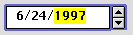

Clock Controls
The clock control combines the edit text field (page 38) and little arrows control (page 33) into a convenient implementation of the familiar Date & Time control panel. The user can change the time and date displayed by using the little arrows or by typing the value into the edit text field. Figure 2-22 shows a clock control displaying a date.Figure 2-22 Clock control displaying date

The clock control supports keyboard navigation and focus (page 62), as well as direct typing of values. When the clock control has keyboard focus, pressing the Up-Arrow and Down-Arrow keys has the same effect as clicking the up and down arrows.
You can make a clock control inactive, so that it displays time and date values without allowing the user to change them.